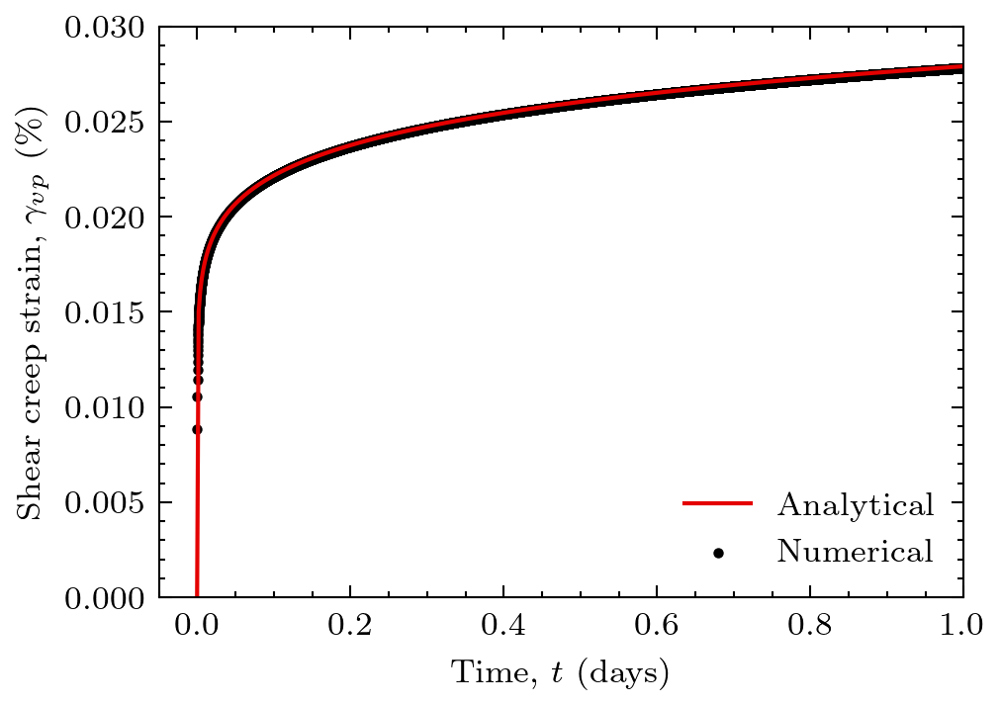

Lemaitre's viscoplastic model
This problem considers a squared medium subject to external stress leading to creep. The material deforms following the Lemaitre's viscoplastic constitutive model.
Setup
The squared medium is subject to a compressive horizontal uniaxial stress at a constant temperature, resulting in a uniaxial deformation. The setup is sketched in Figure 1.

Figure 1: Setup for the Lemaitre's viscoplastic medium.
Solutions
The scalar equivalent creep strain evolution is governed by the following constitutive model:
where is a time-scaling model parameter unique to the material under consideration. Azabou et al. (2021) expressed this parameter in terms of the Arrhenius law as to describe the behavior of rock salt. In this case, for isothermal conditions. and are material parameters. is a normalizing parameter always taken as 1.0. is the scalar equivalent creep strain.
The analytical solution for this problem is given as:
where is time.
The following creep curve shows a comparison between the analytical and the numerical solutions of the Lemaitre model.

Figure 2: Creep strain evolution in a Lemaitre's viscoplastic medium.
Complete Source Files
References
- M Azabou, Ahmed Rouabhi, L Blanco-Martín, F Hadj-Hassen, M Karimi-Jafari, and G Hévin.
Rock salt behavior: from laboratory experiments to pertinent long-term predictions.
International Journal of Rock Mechanics and Mining Sciences, 142:104588, 2021.[BibTeX]